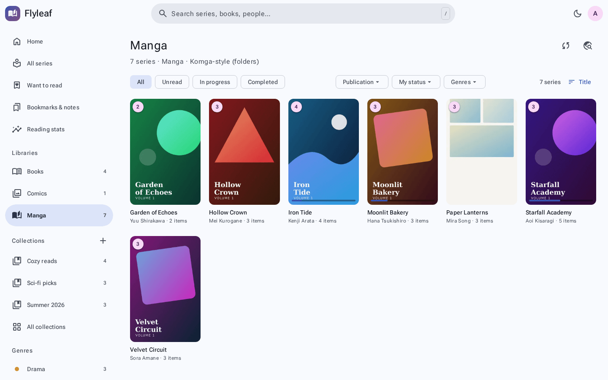
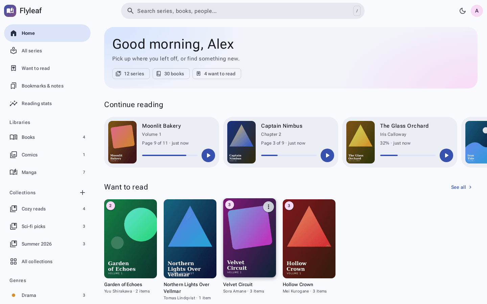
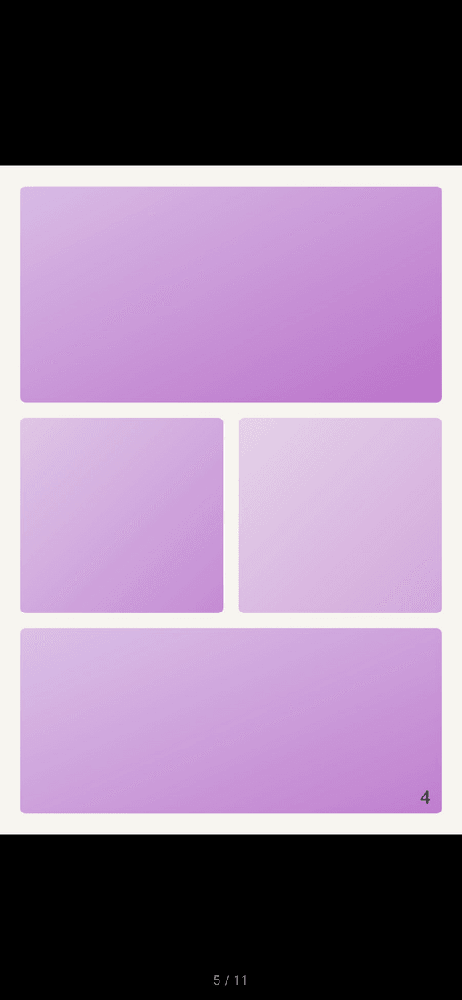

Every story. One library.
Bring your EPUBs, PDFs, manga and comic archives together. Organise with collections, tags and smart shelves. Pick up exactly where you left off.

Books, manga, comics. All the worlds you love, in one beautiful home. Meet Flyleaf, your self-hosted library made for getting lost in a good story.


Your collection deserves more than a folder.
Give it a space that feels like you.
Bring your EPUBs, PDFs, manga and comic archives together. Organise with collections, tags and smart shelves. Pick up exactly where you left off.

Nine themes, custom colours, light and dark modes. A Material 3 interface with a little personality and plenty of room to make it yours.
A little colour goes a long way.Read in your browser or install the web app on your phone. Save books for offline reading over HTTPS, then sync progress when you’re back.
Highlights, notes and bookmarks, gathered across your library. Save a sentence that stays with you.
A favourite line.
A thought worth keeping.HIGHLIGHT IT. KEEP IT CLOSE.
A reader that makes room for the story. Try a taste: turn the page, change the paper, and find your favourite size.
Interactive illustration of reader controls, not a running Flyleaf instance. The full app also offers fonts, spacing, annotations and reading profiles.
Choosing a reader is personal.
Here’s where Flyleaf makes sense.
Prefer running your own library to relying on a hosted reading service? Flyleaf lives on your server, with your own files and user accounts.
Instead of splitting books and comics across specialised apps, read both in one place, with dedicated ebook, comic and webtoon modes.
Use the built-in reader or connect an OPDS client. An MIT license, REST API and Lua plugins give you room to explore and extend.
Prefer a managed service? Flyleaf requires a server you maintain. Features and screenshots: Flyleaf project documentation ↗
Your collection is ready for its own place.
Get started with Flyleaf ↗Explore the source on GitHub